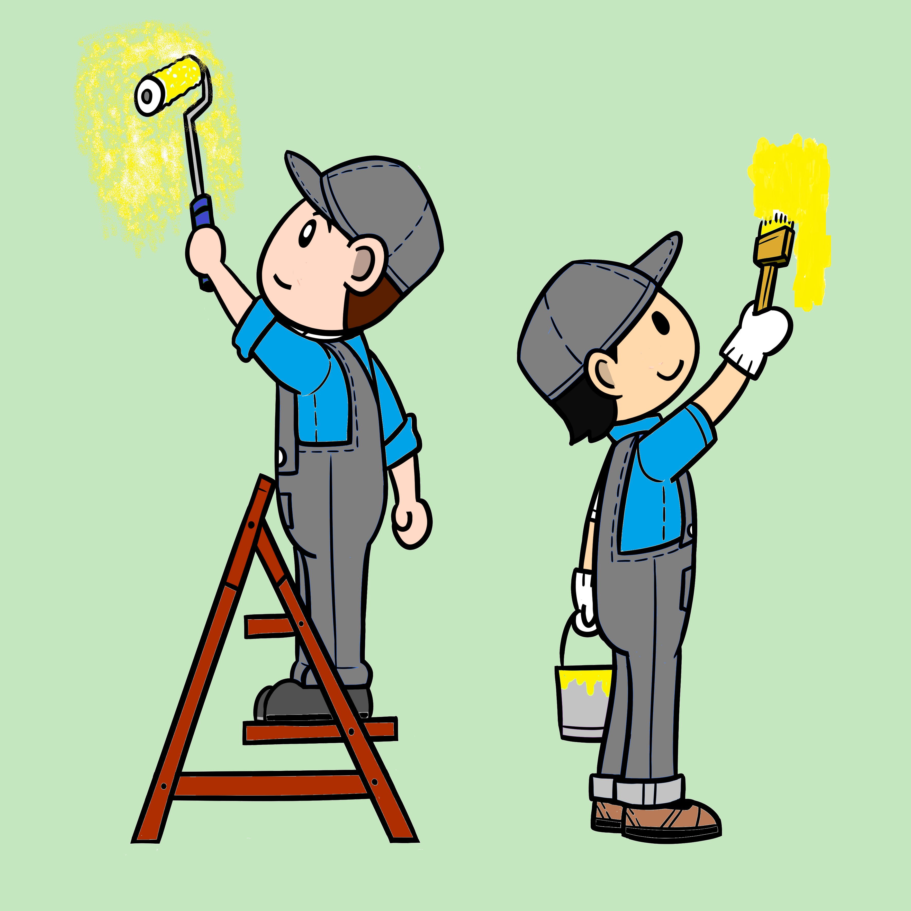

Los dos pintores

Somos una pequeña empresa de la ciudad de Santa Fe dedicados a realizar trabajos de reparación y pintura con años de experiencia, con conocimientos en albañilería y fontanería

Realizamos trabajos de pintura en paredes interiores, exteriores, aberturas y rejas con el fin de proteger o renovar brindando un acabado estético correcto
Uno de los mayores problemas en las paredes es la humedad, los hongos y el daño del revoque a causa de este, muchas veces causado por la falta de un recubrimiento exterior adecuado, esto genera una falta de estética y posiblemente llegue a afectar la salud de los residentes
Usualmente el uso continuo de una vivienda así como fallas en la construcción de la misma genera que las paredes se dañen, para poder realizar un adecuado trabajo de pintura es necesario realizar las reparación de las mismas.
Las lluvias abundantes, o un techo con desagües pobres o nulos puede hacer que se produzcan filtraciones en el techo, para evitar este problema se debe realizar la impermeabilización con membrana líquida